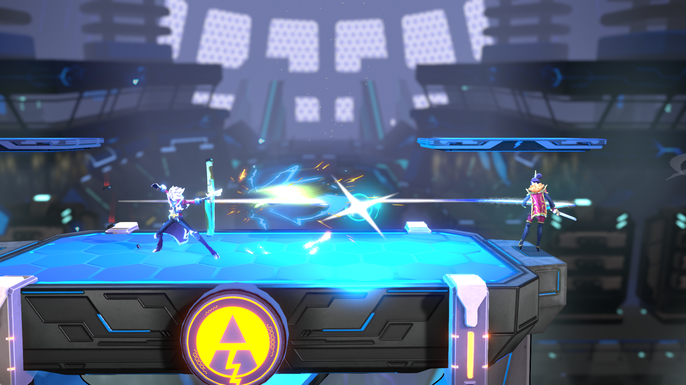

Moveset Reworks
Refining Gameplay Identities across the game's roster

2020
Content Update
Design & Implementation
Shortly after starting work on RushRev, i was part of the design team tasked with reworking the existing roster of 8 characters. The project was set on a ridiculously tight deadline, and involved working with numerous stakeholders ranging from players to upper management.
At this point in time, Rushdown was still finding its identity amidst the many ideas that had been implemented in an attempt to distinguish the game from its predecessor, Icons. While characters have had changes from their Icons counterpart, many still felt like Icons characters stuck in a new game.
On top of this, a particular piece of feedback had been recurring across playtests -- "The characters all play the same". The powerful universal systems invalidated a lot of the original strengths and weaknesses that the Icons roster had, and lead to every character relying on the same strategies and gameplay patterns.
In order to remedy both of these related issues, characters were given updated movesets designed around the faster speed and new system mechanics of Rushdown Revolt.
On top of this, a particular piece of feedback had been recurring across playtests -- "The characters all play the same". The powerful universal systems invalidated a lot of the original strengths and weaknesses that the Icons roster had, and lead to every character relying on the same strategies and gameplay patterns.
In order to remedy both of these related issues, characters were given updated movesets designed around the faster speed and new system mechanics of Rushdown Revolt.
 Urdah was pushed even more towards her grappler identity and was given the unique ability to force opponents into a grounded state. She also had several new moves added or redesigned to facillitate making use of this state more than any other character.
Urdah was pushed even more towards her grappler identity and was given the unique ability to force opponents into a grounded state. She also had several new moves added or redesigned to facillitate making use of this state more than any other character.
 Ezzie was made significantly weaker up close, but was given more ways to keep her opponents at bay, and a new unique system that allowed her to trade mobility for more firepower, mitigating a common trend in platform fighters where ranged characters tend to create cat-and-mouse situations as they run away.
Ezzie was made significantly weaker up close, but was given more ways to keep her opponents at bay, and a new unique system that allowed her to trade mobility for more firepower, mitigating a common trend in platform fighters where ranged characters tend to create cat-and-mouse situations as they run away.